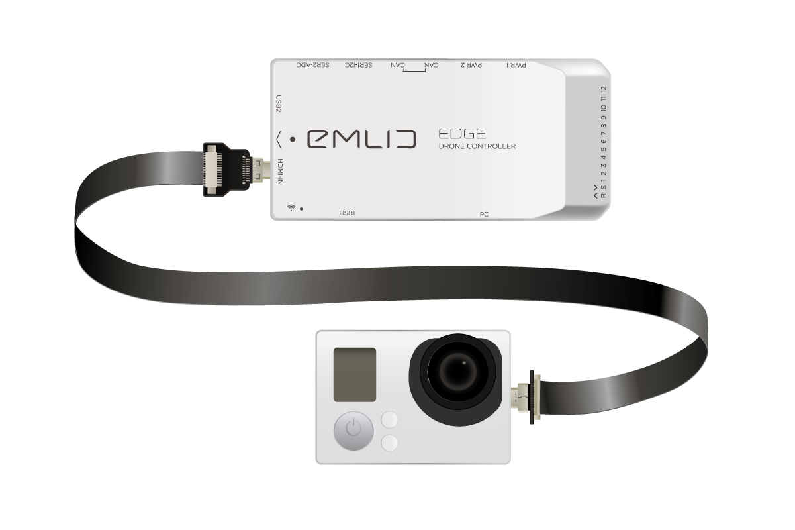
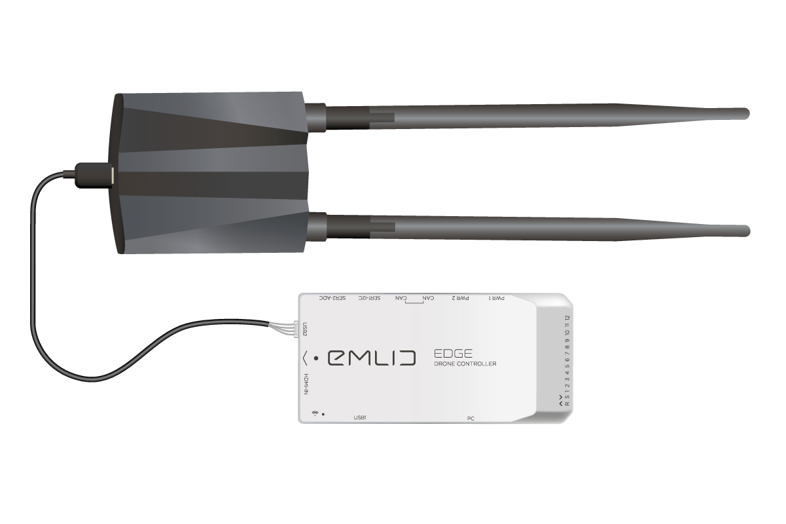
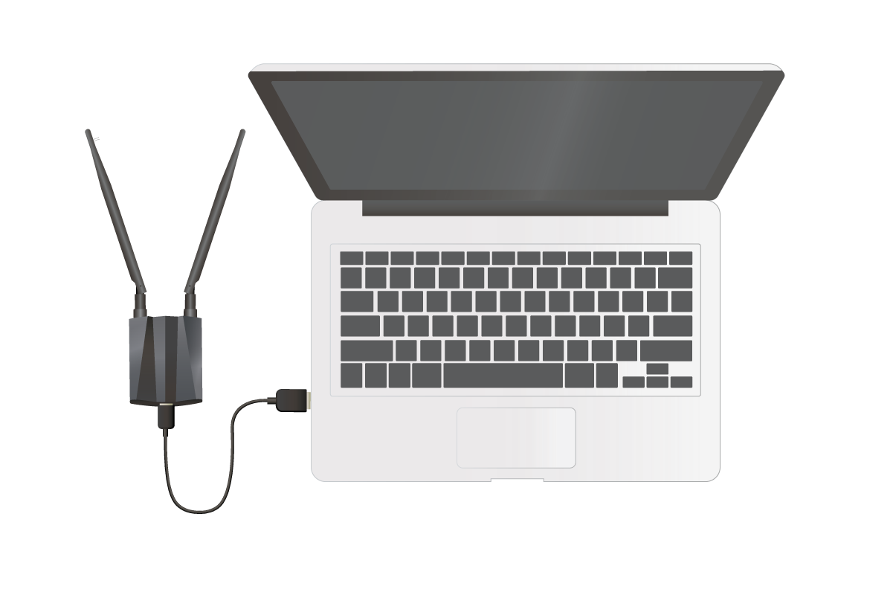
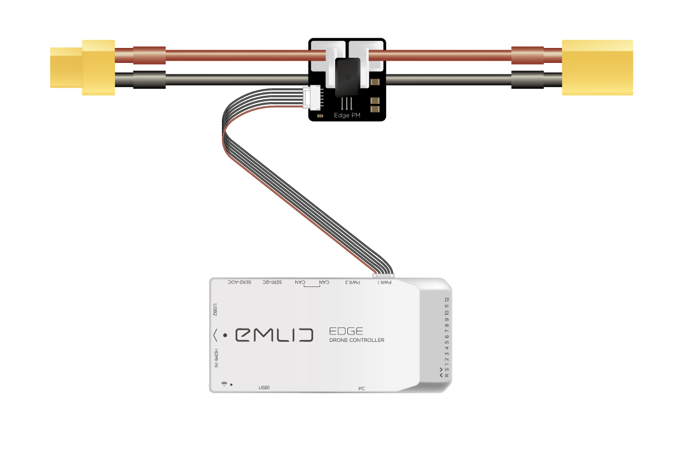
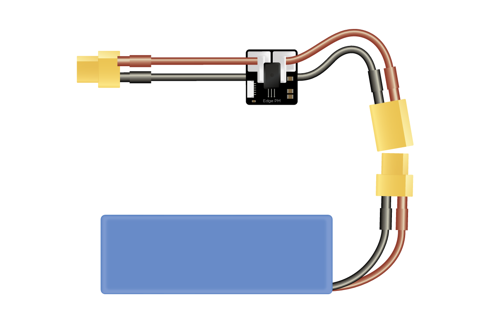

Archived:Edge Quick Start¶
This quickstart tutorial will guide you through the initial setup of Edge drone controller and its accessories. In the end you’ll get a configured Edge drone controller that streams video from a camera to your laptop. After that you can proceed to the hardware installation guide and install your Edge in a frame.
Note
Please update Edge to the latest firmware before continuing.
Tip
If you encounter any issues performing these steps, we are happy to help you out on our community forum .
Connect Edge GNSS module¶
Edge GNSS module is a positioning device that contains a GNSS receiver, a high-precision barometer and two 3-axis compasses.
- To connect Edge GNSS module to Edge use a JST-GH-4P to JST-GH-4P cable.
Connect one end of the cable to any of the CAN ports on Edge GNSS module
Connect another end of the cable to any of the CAN ports of Edge drone controller
{kind=link}
Connect video camera¶
Camera should be connected to the HDMI-IN port on Edge. In case you are connecting an action camera then most likely it will have Micro-HDMI connector as well. In that case you would need Micro-HDMI to Micro-HDMI cable to connect the camera to the Edge.
{kind=link}
Warning
Turn off the camera’s internal WiFi, otherwise it may interfere with RC equipment or Wi-Fi modules
Warning
Turn the camera on after Edge is booted.
Tip
Resolution and frame per second value of the input stream may vary. Maximum supported video format is 1080p 30fps.
Connect Wi-Fi modules¶
Edge kit comes with two identical long-range Wi-Fi modules in separate boxes. Use one to connect to the Edge drone controller and another one to connect to a computer (assuming a laptop for rest of the guide).
Connect Wi-Fi module to Edge¶
{kind=link}
To connect Wi-Fi module to the Edge use a Micro-USB to JSH-GH-4P cable from the kit.
Plug JST-GH-4P connector into Edge port labeled USB2
Plug Micro-USB connector into Micro-USB port of the Wi-Fi module
Connect Wi-Fi module to a computer¶
{kind=link}
We need to connect another Wi-Fi module to the laptop. In order to do that you need to perform two simple steps
Use Alfa’s Micro-USB-3.0 to USB-3.0 cable from the Wi-Fi module box
Connect Micro-USB-3.0 one end of the cable to the Wi-Fi module
Connect the other end to the USB port of your laptop/desktop computer
Software installation¶
Now we need to install the driver for the Wi-Fi module. The instructions depend on your OS. Please, proceed to the https://docs.emlid.com/edge/quickstart/#software-installation for the detailed instructions.
Power from a battery¶
Now you can turn on your Edge using the Edge Power Module (PM).
Connect JST-GH-6P connector to any power port on Edge (PWR1 or PWR2).
{kind=link}
And after that connect a battery to your PM.
{kind=link}
Connect to Edge’s access point¶
After powering up Edge needs some time to create an access point (AP). Connect to Edge’s AP (edge) with password: EmlidEdge (since 1.2 the password will be emlidedge).
Note
Most laptops have a built-in Wi-Fi module. You need to connect to Edge using specifically the external Wi-Fi module provided with Edge.
{kind=link}
Tip
To avoid interference from the internal Wi-Fi we recommend disabling it.
Warning
Be sure you connect to AP using the external Wi-Fi module, not the built-in Wi-Fi module of your laptop After the connection succeeded you can run the QGC.
Configuring QGroundControl for Edge¶
Detailed instructions are available here.